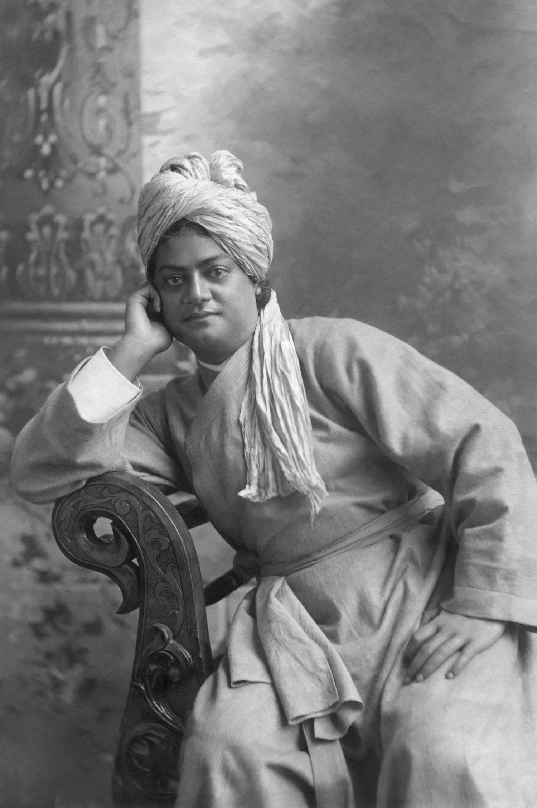

Swami Vivekananda (1863–1902) was a renowned Hindu monk and a key figure in the introduction of Indian philosophies of Vedanta and Yoga to the Western world. Born in Kolkata, India, as Narendranath Datta, he was greatly influenced by his spiritual mentor, Sri Ramakrishna Paramahansa. Swami Vivekananda gained widespread recognition for his inspiring speech at the Parliament of the World's Religions in Chicago in 1893, where he addressed the audience as "Sisters and Brothers of America." His eloquent speech emphasized the universality of religion and the importance of tolerance and acceptance among different faiths. After the Parliament of the World's Religions, Swami Vivekananda spent several years traveling and lecturing in the United States and Europe, spreading the teachings of Vedanta and Yoga. He established the Vedanta Society in the West and the Ramakrishna Mission in India, organizations that continue to promote spiritual values, education, and social welfare. Swami Vivekananda's teachings revolved around the idea of the divinity of the soul, the oneness of all religions, and the importance of serving humanity as a means of worship. He played a crucial role in reinterpreting and reinvigorating Hindu philosophy for the modern era, inspiring people to live a life of purpose, selflessness, and spiritual awakening. Swami Vivekananda passed away at a young age of 39, but his legacy lives on through his writings, teachings, and the institutions he founded. His impact on the promotion of Hindu philosophy, as well as the broader understanding of spirituality, continues to be felt globally.
